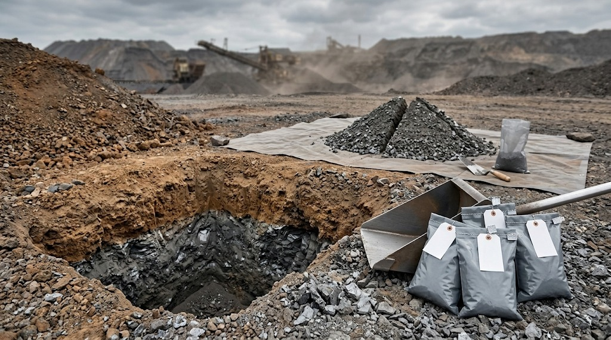
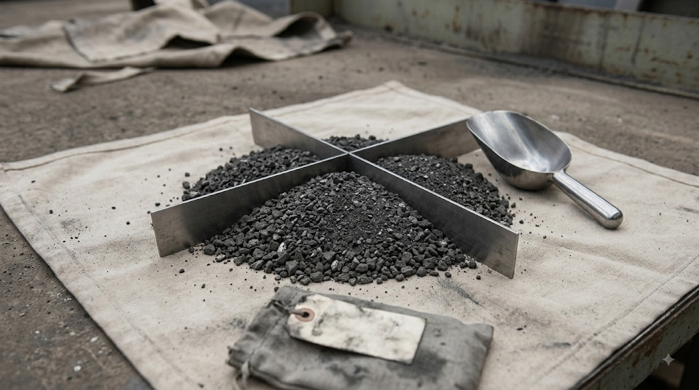

Ошибка отбора не исправляется качеством лаборатории: результат испытаний не может быть точнее, чем проба. Отвал неоднороден, поэтому проба отбирается из нескольких зон, распределённых по площади. Отбор производится ниже слоя выветривания, так как поверхность окислена и вымыта осадками.
Процедура включает объединение точечных проб и их сокращение методом квартования до массы, которую задаёт программа испытаний. Крупные включения металла не отбрасываются, иначе итоговый расчёт извлечения искажается.
Обязательным условием является формирование контрольной части пробы, которая опечатывается и остаётся на хранении у предприятия. Это гарантирует возможность арбитражной проверки при возникновении споров. Отбор — одноразовое событие, определяющее точность всего проекта.


R. Keren работает со всеми вторичными металлургическими материалами. Схема переработки определяется свойствами конкретного материала и подтверждается лабораторно в ходе работы по проекту — это рабочий шаг, а не ограничение по номенклатуре.
Любой проект начинается с данных, а не с предположений.
Прислать данные о вашем материале
Оборудование и зоны ответственности · Все вопросы промышленника